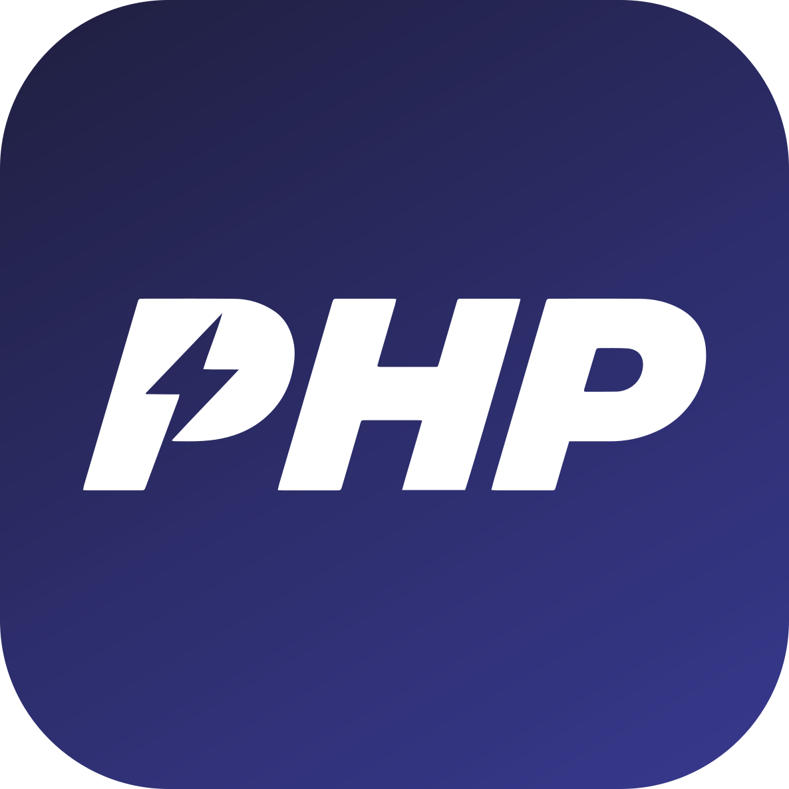

A fast, open source PHP IDE. Free for everyone, commercial use included.
Windows 10/11 · macOS 11+ (Apple Silicon and Intel) · Ubuntu, Debian, Fedora and other Linux distributions · version 0.x
Its own index of your project and vendor/, written in Rust and cached in the project. Open files are checked first, the rest in the background.
Go to Definition, Find Usages and Rename work from the index, with no language server to install.
Mago's linter and PHPStan-like analyzer are built in, with Laravel, Symfony, PHPUnit and Doctrine rules from your composer.json.
Change markers, diffs, commit and push, branches, a log with a graph, annotations and stash.
PostgreSQL, MySQL/MariaDB and SQLite: schema, query consoles and table data. Passwords stay in your system's credential store.
Xdebug 3 step debugging with inline values, and real shells in tabs: PowerShell, Git Bash, WSL, bash, zsh.
| System | File on the releases page |
|---|---|
| Windows 10/11 | …_x64-setup.exe or .msi |
| Windows, no install | …_windows-x64-portable.zip |
| macOS 11+ (Apple Silicon and Intel) | …_universal.dmg |
| Ubuntu, Debian | .deb |
| Fedora, openSUSE | .rpm |
| Other Linux | .AppImage |
Have PHP, Git and Composer on your PATH to run PHP, tests, the Git tools and package updates.
Yes. PHPBlitz is open source under the Apache License 2.0: you may use it, change it and share it, commercially too. When you redistribute it or build on it, keep the license and the NOTICE file, which credits its author.
No. There is no telemetry and no account. PHPBlitz works on your files locally; it only uses the network for things you start, such as Git push and pull, Composer, or a database connection.
No. PHPBlitz is an independent project written from scratch. It uses a similar workflow and keyboard shortcuts so it feels familiar, but it is not affiliated with, endorsed or sponsored by JetBrains s.r.o.
Try it on your projects and report what doesn't work. Pull requests are welcome.
PHPBlitz is built on hundreds of open source projects, among them Tauri, Monaco Editor, Mago, React and xterm.js. The full list, with licenses, is in THIRD_PARTY_NOTICES.md and in the app under Help ▸ Open Source Licenses.